create · inspire
digital stories
creative developer & designer · passionate about books, music & productivity.
About Me
Who I am
Hi, I'm Dipisha Dumre from Waling, Syangja, Nepal. I completed my BICTE from Tribhuvan University under Waling Multiple Campus.
Outside of tech, I'm deeply interested in reading books, listening to music, editing, and personal productivity. I believe that a curious mind and a creative spirit are the keys to meaningful work.
I love blending creativity with technology whether it's designing an intuitive interface, editing a video, editing photos or writing clean code.
Details
Skills
Featured Work
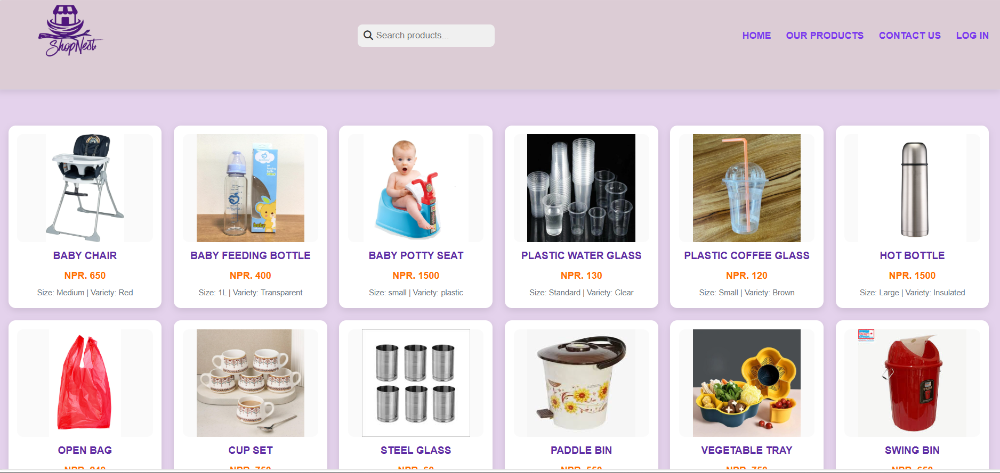
ShopNest
A web-based shop management system digitizing operations for small shops and mini-markets. Features role-based access for Owners, Staff, and Customers with efficient inventory, customer, and transaction management. Built with PHP and MySQL for a cost-effective, quick 9-month payback solution.
ShopNest is a web-based shop management system developed to digitize and streamline operations for small shops and mini-markets. It features role-based access for Owners, Staff, and Customers, enabling efficient inventory, customer, and transaction management. The system is built using accessible technologies like PHP and MySQL, making it a cost-effective solution with a quick 9-month payback period. By automating manual processes, it addresses common challenges like inaccurate stock tracking and slow billing. Future enhancements could include offline access and real-time communication to further improve its functionality.
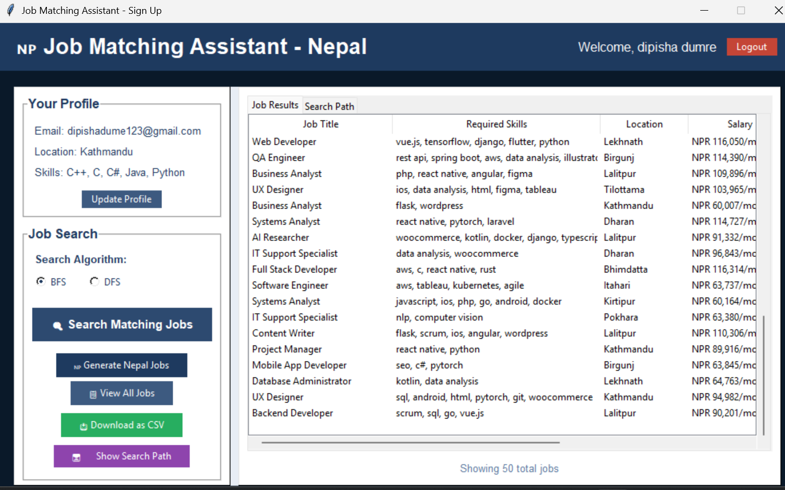
Job Matching Assistant
A desktop application built with Python and Tkinter that matches user profiles to Nepal-based jobs using BFS and DFS algorithms. Includes authentication, profile management, search-path visualization, and CSV export. Features a modern, animated interface with a complete password-reset system.
This project is a Job Matching Assistant desktop application built with Python and Tkinter. It allows users to register, log in, and update their profile with skills and location. The core functionality uses BFS and DFS algorithms to search a CSV dataset of Nepal-based jobs and match them to user profiles. The application displays matching jobs with scores, visualizes the search paths, and allows exporting results to CSV. It features a complete authentication system with password reset functionality and a modern, animated user interface.
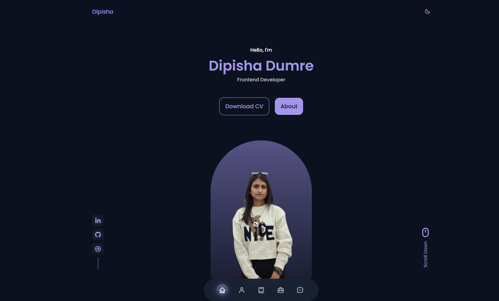
Draft Portfolio Website
A personal portfolio website built from scratch with HTML, CSS, and JavaScript. Features light/dark mode, a filterable gallery, testimonial slider, and a fully responsive design. Showcases skills, services, and contact form with a clean, modern UI using Boxicons and Swiper.
This project is a personal portfolio website built from scratch using HTML, CSS, and JavaScript. It features a clean, modern design with both light and dark mode support, showcasing the developer's skills, experience, and recent work. The page includes sections for About Me, Skills (frontend and backend), Services, a filterable portfolio gallery, testimonials, and a contact form. Interactive elements like the Swiper slider for testimonials and MixItUp for portfolio filtering enhance user experience. The design uses Boxicons for icons and is fully responsive, making it suitable for all devices. This portfolio serves as an effective personal branding tool for a frontend developer, highlighting their expertise in UI/UX and web development. The project is open-source and available for anyone to use or modify.
Beyond the Code
Want to Grow? Start Reading.
How deep reading habits build self-awareness, emotional depth, and quiet confidence.
The Rhythm of a Well-Lived Life: Music & Growth
How music shapes your mind, your mood, and the person you're becoming.
Small Habits, Big Change: Productivity That Feels Human
How small, honest habits protect your focus, your energy, and your peace of mind.
Extra-Curriculum Activities
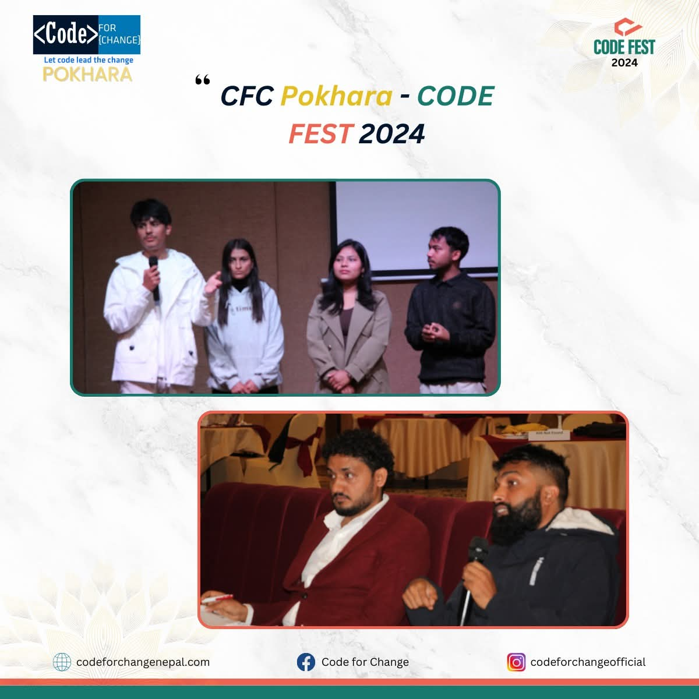
Code Fest 2024
Developed an AI-powered voice module for automating home tasks, improving daily efficiency.
Presented at CodeFest 2024 by Team Idea Cure, a dedicated group with 4 members, our project "Digital Sathi" integrated smart technology to enhance accessibility and convenience. The AI-based voice module was designed to automate home tasks, aiming to make everyday living smoother and more efficient for users.
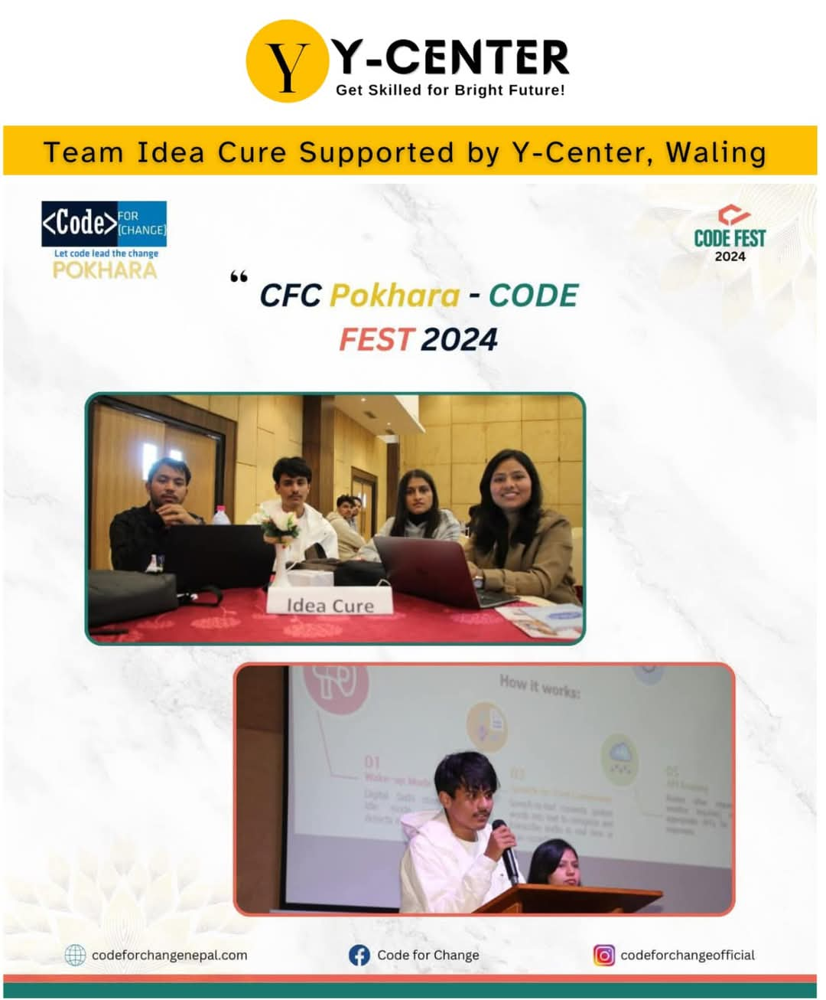
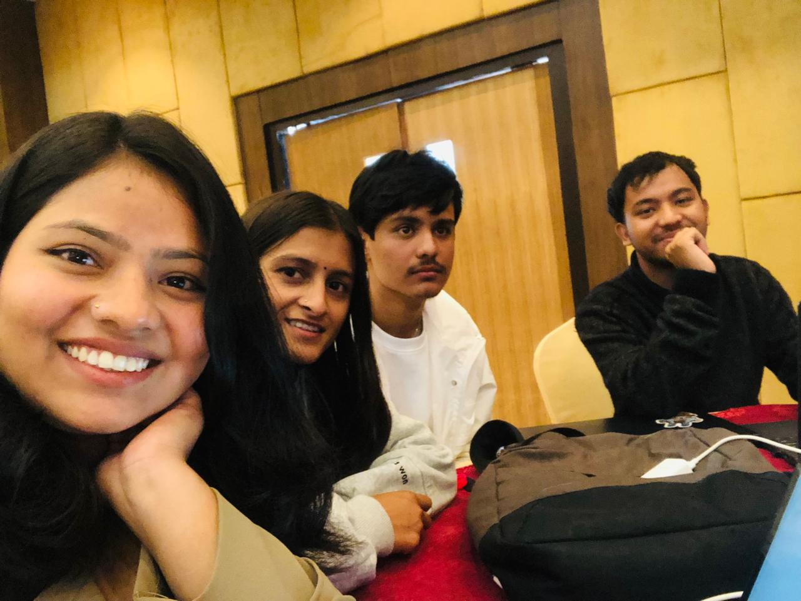
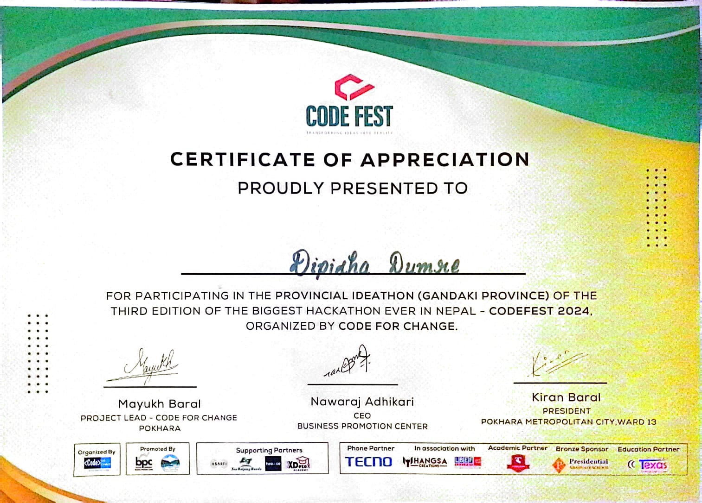
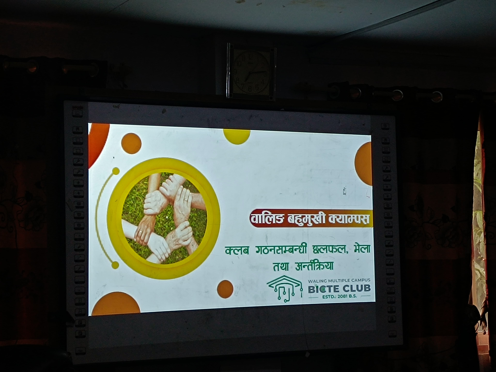
Secretary, BICTE Club
Served a 1-year term as Secretary for the student-led BICTE Club, managing administrative tasks and organizing campus events.
From September 2024 to September 2025, I worked as the Secretary of the BICTE Club, a student organization at Waling Multiple Campus. My responsibilities included managing official documentation and organizing tech-related events. I also coordinated directly with students to identify their problems and challenges, and worked closely with teachers and colleagues to find effective solutions to support them.
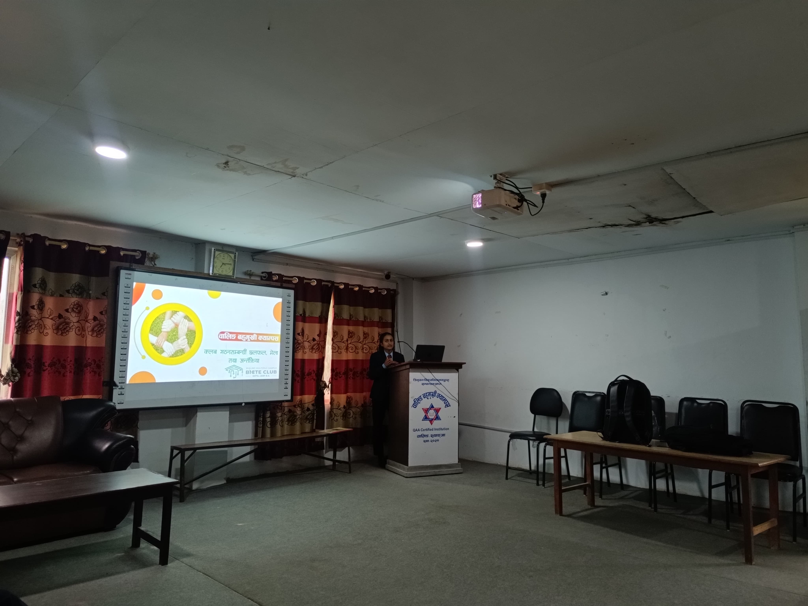
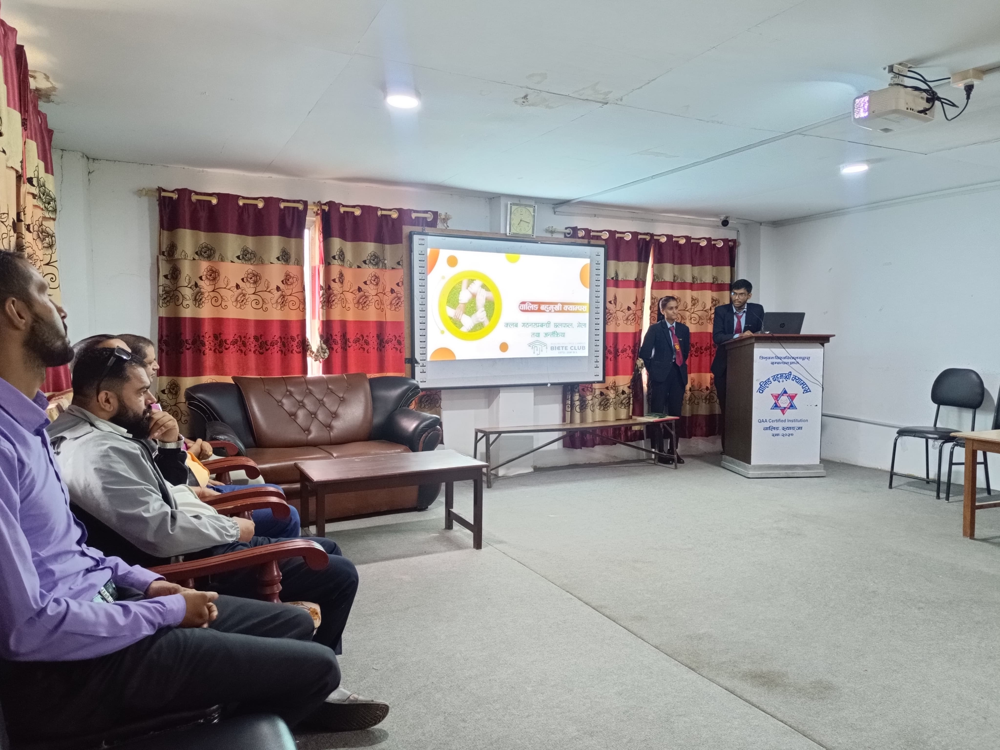
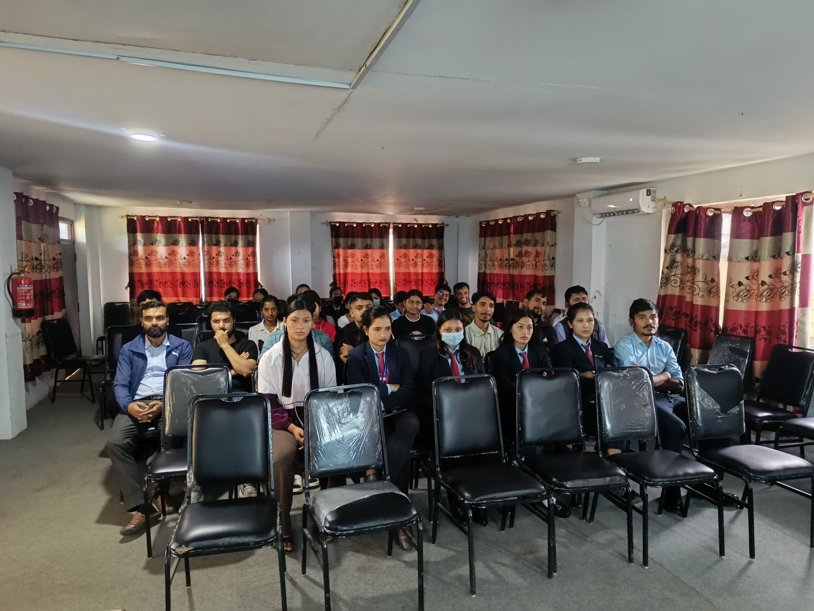
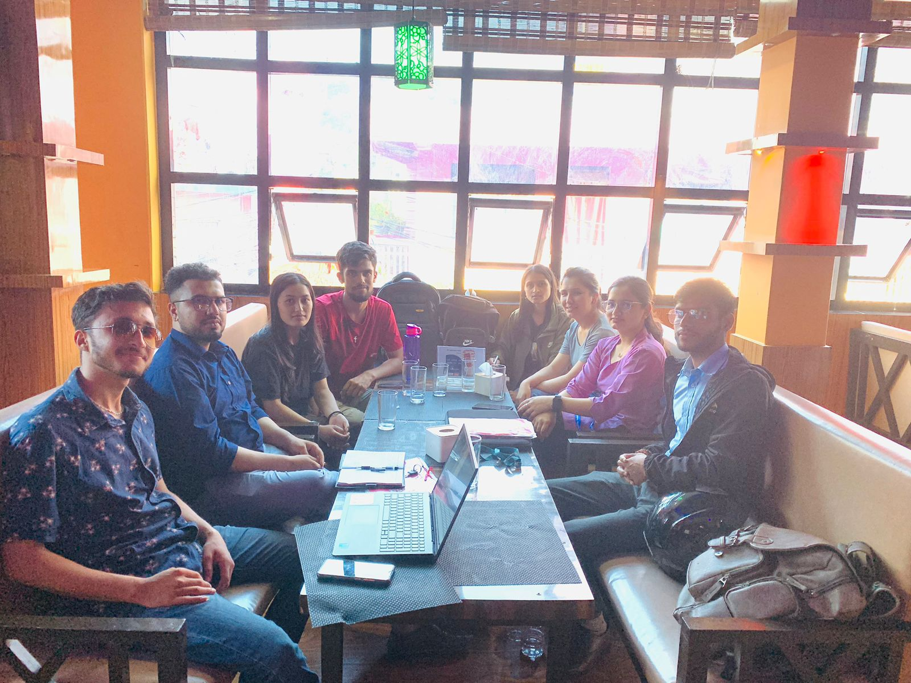

Second Syangja Education and Entrepreneurship Fair-2082
Pitched "Farm Connect"a smart agriculture platform designed to connect farmers with data and markets securing the 3rd position.
From May 1st to 3rd, 2025 (2082 Baishakh 1-3), I attended the Second Syangja Education, Skills, and Entrepreneurship Fair, organized by the Syangja Think Tank. Along with two of my friends, we participated in the Startup Idea Pitch program and achieved 3rd position. Our project, Farm Connect, is a tech-driven smart agriculture startup designed to connect farmers with vital data, resources, and markets. We focused on automating farm management to boost productivity and sustainability. In our team, I led the innovation and scalability efforts, ensuring our smart farming solutions were both practical and forward-thinking.


BICTE Summer BOOTCAMP 2025 (IOT)
Participated in an intensive IoT bootcamp where 62+ students built projects like a Smart Parking System and a Buzz Wire Game.
During the BICTE Summer Bootcamp 2025 focused on the Internet of Things (IoT), a total of 62+ students participated. We were divided into 15 different groups to tackle practical tech challenges. In my team of 4 members, we successfully designed and developed a Smart Parking System and a Buzz Wire Game using various IoT tools and microcontrollers. This hands-on experience greatly enhanced my hardware integration and problem-solving skills.


Digital Skills & Cyber Security Training
Participated in a GIZ MEG Diaspora Expert program empowering women and girls through digital skills, cyber security, and financial literacy.
I participated in an empowering program conducted by the GIZ MEG Diaspora Expert Program, aimed at equipping women and young girls with essential modern skills. The training focused on three crucial areas: Digital Skills, Cyber Security, and Financial Literacy. The program was expertly coordinated and led by trainer Gaurav Tiwari. This initiative was incredibly valuable in helping participants navigate the digital world safely, manage their finances better, and build confidence in tech-driven environments.


BICTE Club Tech Bootcamp
Invited as a Guest Lecturer to teach Report Writing to 30+ students across multiple BICTE semesters.
The BICTE Club organized a comprehensive bootcamp on Shrawan 02 and 03, 2083, focusing on Web Development, Git/GitHub, and Report Writing. I was honored to be invited as a Guest Lecturer for the second day. I delivered a detailed session on Report Writing, guiding over 30+ students from the BICTE 2nd, 4th, and 7th semesters. I explained the entire process, from structuring and formatting to final submission, helping them understand the academic and professional standards required.


Get In Touch
send a message
dipishadumre12@gmail.com
based in Waling, Syangja · open to collab